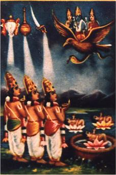

HOME
AZHVARS
ACHARYA
VEDIC SCIENCE
ABOUT US
HOME
AZHVARS
ACHARYA
VEDIC SCIENCE
ABOUT US
 |
|
|---|---|
| Poigaiazhvar | |
| MONTH: | Iypasi Thiruvonam |
| BIRTHPLACE: | Kanchipuram (Yadhotakaari temple Temple - Near Poigai) |
| WORKS: | Mudhal Thiruvandhadhi (100 Verses) |
| AVATAR OF: | Panchajanya (Vishnu's conch) |
|
|
Poigai azhwar was found in a small pond near the Yadhotakaari temple at Tiruvekkaa. In Tamil, small pond is called poigai, and since he was found in a pond, he got the name Poigai azhwar.
It was day time at thirukkovalur, but it darkened and started raining heavily. The wandering Poigai azhwar found out a small hide out, which has a space for one person to lie down. Boodath azhwar arrived there looking for a hiding place and Poigai azhwar accommodated him, with both sitting together. In the meanwhile, Peyazhwar also came to the same place as all the three preferred to stand because of lack of space. The darkness became dense and inside the small room, they were not able to see each other. In the meanwhile, they felt a fourth person also forced his way among them. The three azhwars realised from the light of the lightning that the fourth one had a charming face that was sublime and divine. The trio could immediately realize that it was Vishnu who was huddling among them.
Poigai Azhwar lit the place using the world as a lamp, the ocean as the oil and sun as the light. Bhuthathazhwar lit the place using his love as lamp, his attachment as the oil and his mind as the light. Peyazhwar, being helped by the other two Azhwars, sees the glowing beauty of emperuman who is with his piratti, thiruvazhi and thiruchchangu and performs mangalasasanam for the serthi.
Poigai azhwar wished to see Vishnu's face continuously but could view only from the simmering light of the lightning.
With a view to maintain the continuity of light, he instantly composed hundred songs wishing the earth to be a big pot full of
ghee like an ocean where the Sun could be the burning wick.
"Vaiyam Thagaliya Varkadale Neyyaga
Veyya Kadhiron Vilakkaga - Seyya
Sudar Azhiyan Adikke Suttinen Sol Malai
Idarazhi Ningkugave Enru"

Deeming in the world as bowl, the full sea as ghee, the fierce-rayed sun as a luminous wick, I have twined a garland of speech for the feet of Him who wields the red flaming discus so that there may be freedom from the ocean of misery.
Ayonigi, Saro-yogi, Kasara-yogi, Poigai-piraan, Saravora Munindra, Padma-muni,
Senjchor Kavi by Nammazhwar, Senthamizh paduvar by Thirumangai Azhvar (Nampillai),
Thiruvarangath amudhanar celebrates Poigai Azhwar in his Ramanuja Nootrandhadhi as
"Varuththum puraviruL marra em poygaip piran maraiyin kuruththaiyum senthamizh thannaiyum kootti onrath thiriththanreriththa thiruvilakku".
Mannu Manavaalamamuni in upadesa Rathinamala,
Matrrulla Azhwargalukku munne vanthuthiththu
Nal thamizhai nool cheythu naattaiyuyththa – perrimaiyor
Endru mudhal azhwargal ennum peyarivarkku
Ninathulagaththe Nigazhnthu
MEANING:
These 3 Azhwars appeared before the other 7 Azhwars and benedicted the world with their divine thamizh pasurams.
It is because of this glorious act they became to be popularly known as Mudhal Azhwargal.
Aippasiyil Onam avittam sadhayam ivai
oppilava naalgal ulagaththeer – eppuviyum
pesupugazh poigayar boodhaththar peyazhwar
thesudane thondru sirappal
MEANING:
O’ the people of the world! The vibrant Poigai azhwar, Boodath azhwar and peyazhwar,
by virtue of their incarnations in the world, have brought incomparable and unparalled glory to their birth month and stars
– Aippasi Onam (Thiruvonam), Avittam and Sadhayam.
Thaniyan for Mudhal Thiruvandhadhi was divined by Mudhaliyandan:
"Kaidhai ser poompozhilsuzh kachchi nagar vandhudhiththa
poygaip piran kavinjar poreru - vaiyaththu
adiyavargal vazha arunthamizh nurrandhadhi
padivilangkach seydhan parindhu"
MEANING:
Kanchi derives its name from Brahma who is known as ka, who worshipped the Lord in this kshetra.
In that famed city, in a lotus flower within a lotus pond, under the star Thiruvonam (Sravanam)
which is the star of the Lord Himself, Poigai azhwar was born.
He gave the wonderful Mudhal Thiruvandhadhi Pasuram which is like a lamp that drives away the darkness of the mind and lifts the soul up.